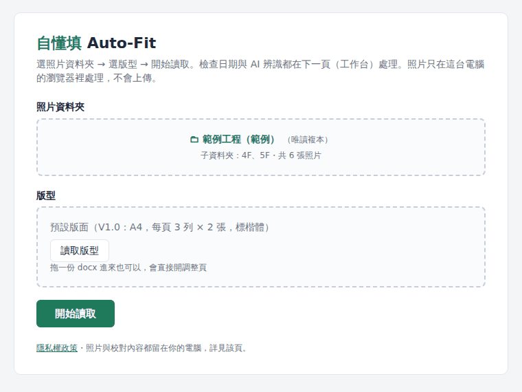
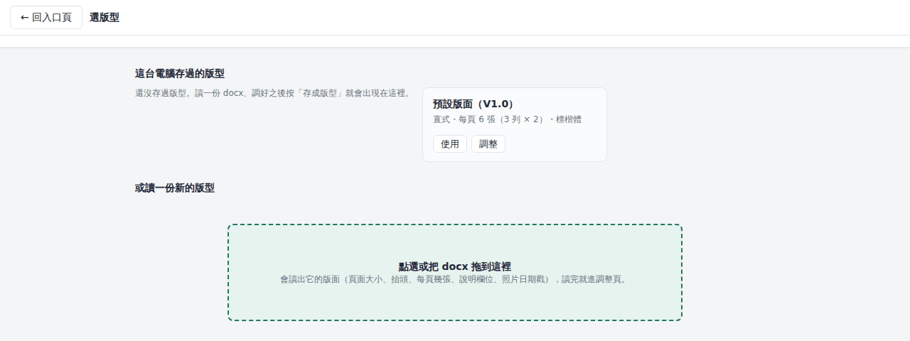
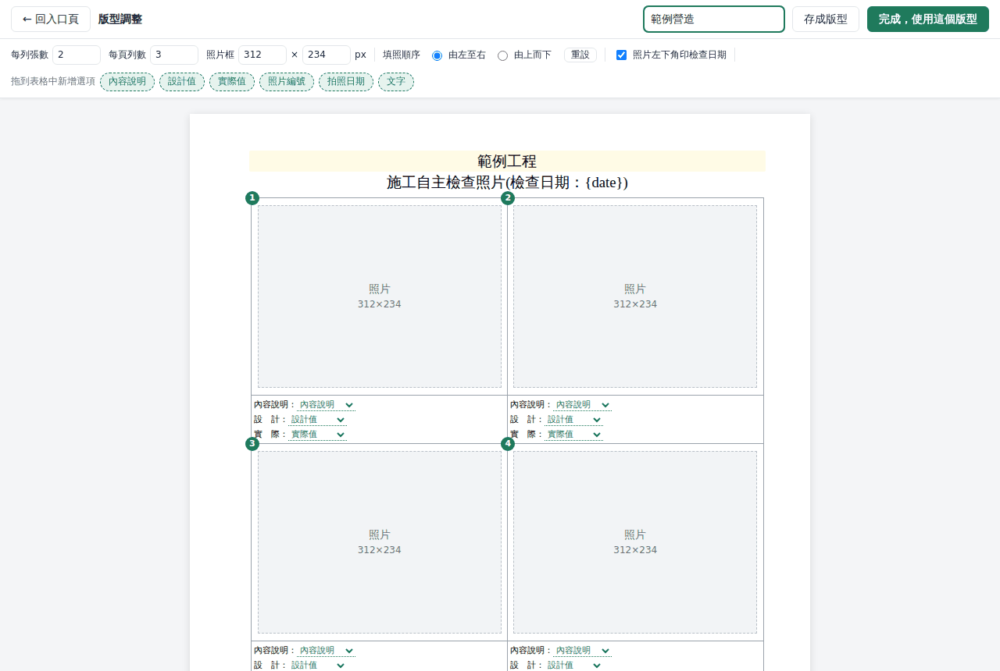
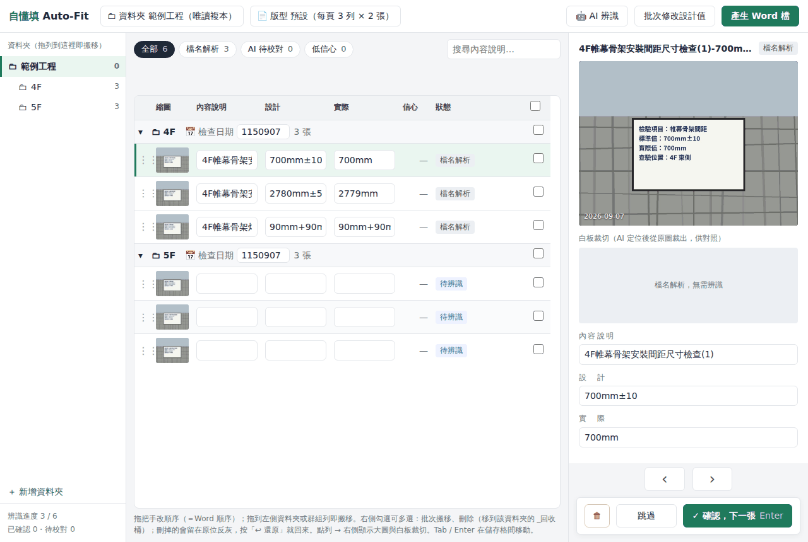
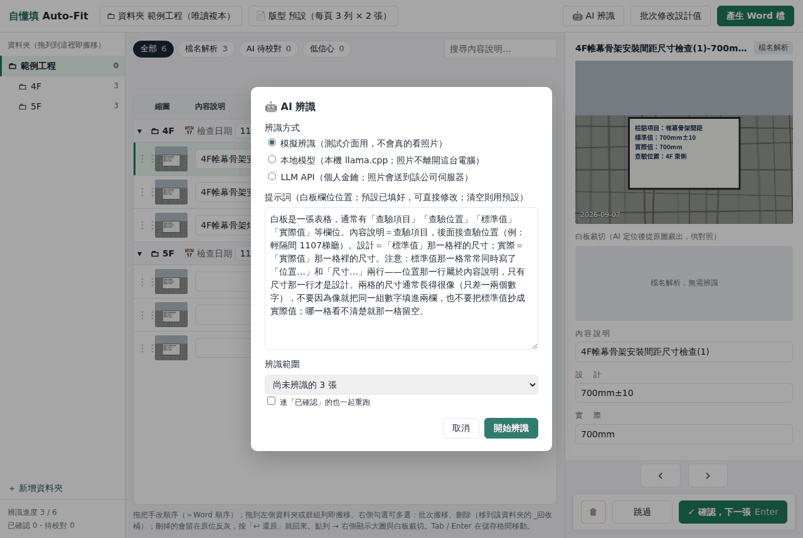
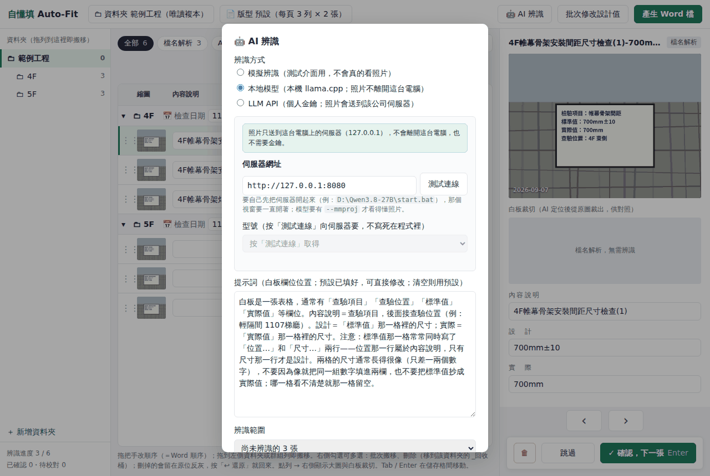
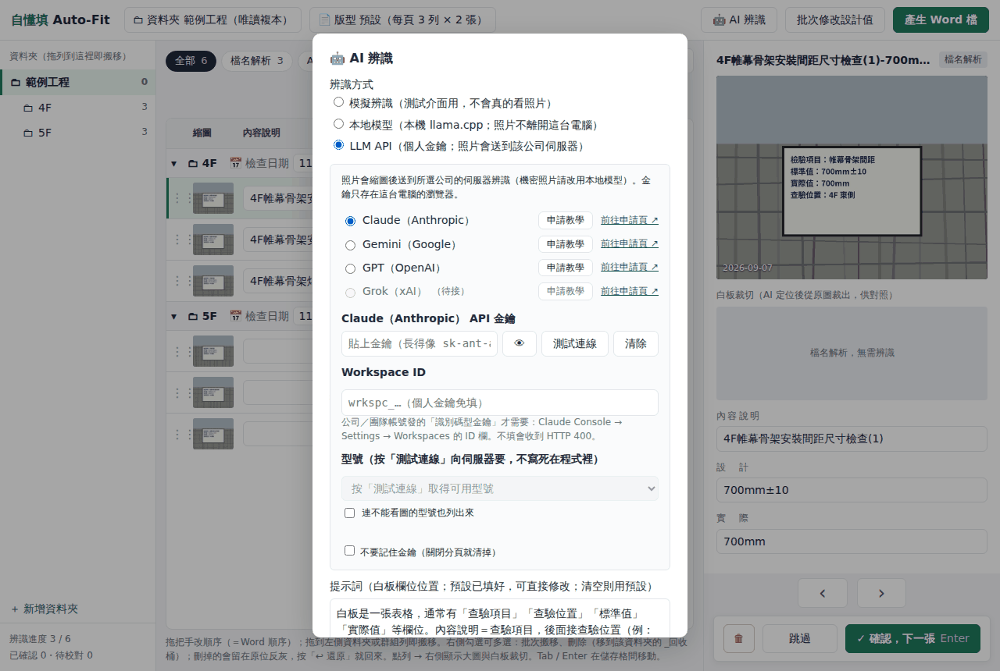
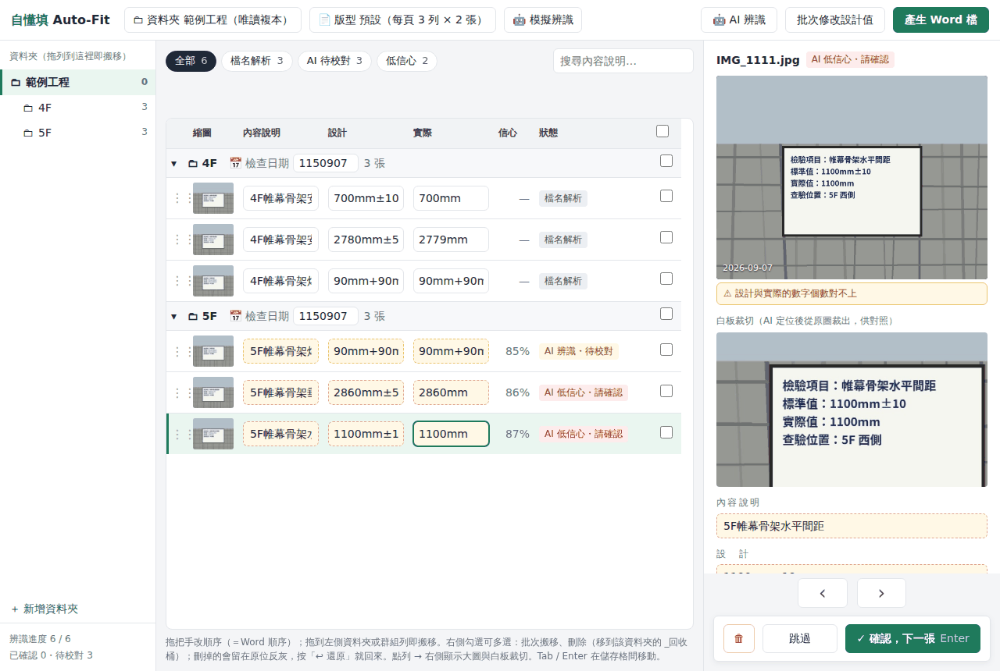
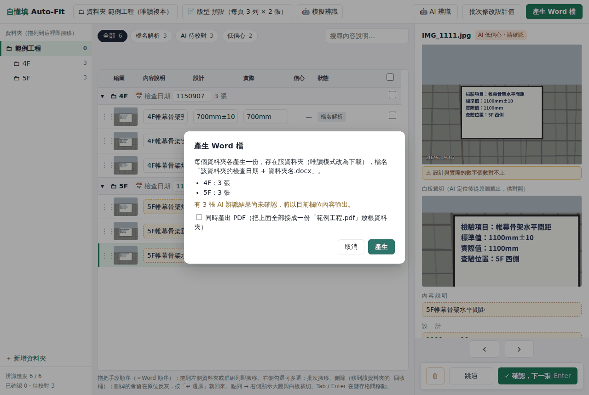

使用說明
自懂填 Auto-Fit — 把一個資料夾的工地照片排成「施工自主檢查照片」Word；白板手寫由 AI 讀出來預填，你只做校對。截圖用的是程式產生的範例照片。
0. 開始前
- 用 Chrome 或 Edge。讀寫資料夾靠瀏覽器的 File System Access API，其他瀏覽器只能以唯讀複本開啟（能校對、下載 Word，但不會真的搬動檔案）。
- 照片先放進一個根資料夾，底下依樓層或區域分子資料夾（例：
帷幕骨架\4F、帷幕骨架\5F）。每個子資料夾會各出一份 Word。 - 已經照
內容說明-設計-實際.jpg命名的照片（例：4F帷幕骨架安裝間距尺寸檢查(1)-700mm±10-700mm.jpg）會自動解析檔名，不必辨識；其他檔名（IMG_1111.jpg）才需要 AI 或手填。 - 照片與產出都留在你的電腦，詳見隱私權政策。
1. 入口頁：選資料夾、選版型
- 點「照片資料夾」區塊或把資料夾拖進去，瀏覽器會問你是否允許讀寫，按「允許」。
- 選到後只顯示資料夾名和子資料夾摘要（瀏覽器拿不到完整路徑）。
- 版型不選就用預設版面（A4、每頁 3 列 × 2 張、標楷體）；要用自己工程案的版面按「讀取版型」，見第 2 節。
- 按「開始讀取」進工作台。

2. 版型：用自己工程案的 Word 版面
選版型
「讀取版型」進入選版型頁。上面列出這台電腦存過的版型，可以「使用」、「調整」或「刪除」；預設版面也能按「調整」改成自己的公司／工程名稱。要讀新的，把該工程案的自檢表 docx 拖進下方框框，工具會整份解析出頁面大小、抬頭、每頁幾張、說明欄位和照片日期戳。

版型調整
所見即所得：抬頭與說明格直接點著打字（Enter 分段、Shift+Enter 段落內換行）；要填值的位置是綠色「膠囊」，可從上方工具列拖進某一行、或拖到別格；每列張數、每頁列數、照片框大小在頂列改；拖曳格子上的編號可以交換填照順序；格子上按右鍵選對齊方式。右上角取個名字按「完成，使用這個版型」，會先存進版型庫再回入口頁。

.doc 讀不了，請先用 Word 另存成 .docx。解析不出來的列會直接列出來，不會偷偷套預設值。3. 工作台
三欄：左邊資料夾樹、中間表格（每張照片一列，三欄可直接改）、右邊大圖與白板裁切檢視器。

- 檢查日期：在每個資料夾列的資料夾名旁邊填（民國，例
1150907），預設今天。檔名、頁首、照片日期戳、版型的「拍照日期」欄都用它。 - 篩選：上方「全部／檔名解析／AI 待校對／低信心」快速切換；右邊可搜尋內容說明。
- 頂列：「🤖 AI 辨識」、「批次修改設計值」（把選到的照片設計值一次改掉）、「產生 Word 檔」。
- 點任一列 → 右側顯示大圖；Tab／Enter 在儲存格間移動。
4. AI 辨識白板
按頂列「🤖 AI 辨識」，選辨識方式、確認提示詞與範圍，按「開始辨識」。辨識期間留在工作台，欄位鎖住、顯示進度，可隨時停止。

| 方式 | 照片去哪裡 | 需要什麼 |
|---|---|---|
| 本地模型 | 只在這台電腦（127.0.0.1） | 先在本機啟動 llama.cpp 的 llama-server（要帶 --mmproj 才看得懂圖），填網址 → 測試連線 → 選型號。機密照片走這條。 |
| LLM API | 直接送到你選的公司（Anthropic／Google／OpenAI） | 自己的 API 金鑰。選公司 → 貼金鑰 → 測試連線 → 從清單挑型號。每家旁邊有「申請教學」。 |


5. 校對
辨識完每張照片的狀態變成「AI 辨識・待校對」或「AI 低信心・請確認」。點一列，右側同時顯示大圖與白板裁切，對照著改三欄；設計與實際的數字個數對不上時會提醒。

- 確認，下一張（Enter）：標成已確認並跳到下一張待校對的。
- 跳過：先不處理，之後從篩選「AI 待校對」找回來。
- 校對結果暫存在瀏覽器，重開同一個資料夾會接回來；已確認的照片再跑辨識時預設不會被蓋掉。
6. 整理照片：排序、搬資料夾、刪除
- 改順序：拖列左邊的把手上下拖，表格順序就是 Word 順序。
- 搬資料夾：把列拖到左側資料夾樹或另一個資料夾的群組列上；勾選多張後拖任一勾選列可整批搬，上方也會出現批次工具列。
- 新增資料夾：左下角「＋ 新增資料夾」。
- 刪除：檢視器左下的 🗑 或批次工具列。網頁無法用 Windows 資源回收桶，所以是搬到該照片所在資料夾的
_回收桶；列會留在原位反灰，按「↩ 還原」搬回來。統計與產生 Word 都不含回收桶。
7. 產生 Word／PDF
頂列「產生 Word 檔」→ 對話框列出每個資料夾各幾張、還有幾張未確認 → 按「產生」。每個資料夾各存一份 檢查日期 資料夾名.docx 在該資料夾裡；每頁都有抬頭，照片依版型排好、左下疊日期（版型有開的話）。

- 同時產出 PDF：把這次所有 Word 的每一頁接成一份
根資料夾名.pdf放根資料夾。勾選時瀏覽器會請求讀取電腦上的標楷體（按「允許」），拿不到就用內附的全字庫正楷體。PDF 是照同一份版面重畫的，行高與 Word 會有極細微差異。 - 唯讀模式（非 Chrome／Edge，或選了不能寫的資料夾）改為下載。
8. 常見問題
Chrome 說「無法開啟這個資料夾」
Chrome 不讓網頁碰磁碟根目錄、使用者資料夾本身等位置。請改選照片所在的子資料夾，或按入口頁的「改用唯讀方式開啟」。
拖曳照片或 docx 到頁面後變成一片空白
那是拖到了頁面上沒有接住的地方，瀏覽器去開那個檔案了。按上一頁回來，把檔案拖到虛線框內。
辨識全部失敗
本地模型：確認 llama-server 視窗還開著、啟動時有帶 --mmproj（沒有會印 TEXT-ONLY mode，這種狀態看不懂照片）。LLM API：按「測試連線」看錯誤訊息，通常是金鑰沒儲值或公司帳號要填 Workspace ID。
想清掉暫存的校對結果或金鑰
瀏覽器設定 → 網站資料 → 清除本網站；金鑰也可在辨識對話框按「清除」。
網址版與本機版有什麼差別？
功能相同。本機版（3_開啟網頁(localhost).bat）多一個「載入範例」；若本機模型在網址版被瀏覽器擋住，改用本機版跑。